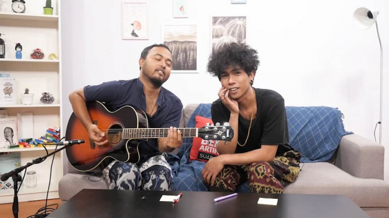

Fourtwnty
Fourtwnty adalah band yang terbentuk pada tahun 2010, lebih tepatnya pada tanggal 20 April 2010. Band yang berdomisili di Jakarta ini merupakan bentukan Roby Satria (Roby Geisha). Roby disini bertindak sebagai producer, music
directory, dan composer. Sementara itu, band ini memiliki 3 personel, yaitu Ari, Nuwi, dan Roots. Uniknya, Fourtwnty biasanya hanya menampilkan dua orang personelnya. Banyak yang bilang bahwa Roots sebenarnya adalah Roby Geisha
Band ini mirip dengan Band Efek Rumah Kaca, pembawaan lagunya santai dan mudah dicerna, namun menghadirkan lirik-lirik cerdas yang berbeda dengan band biasanya. Instrumennya mengalir tanpa kebisingan dan lirik - liriknya
menyuguhkan kebahasaan yang efektif dan cerdas
Sumber : jadiberita.com
Awal Terbentuk
Pada awal terbentuk, Fourtwnty nyatanya hanya sekadar 'iseng' menciptakan lagu hingga karya mereka akhirnya tersebar luas. Alhasil, Fourtwnty merilis mini album pada Desember 2014 dengan tajuk Setengah Dulu.
Terdapat lima lagu di mini album ini yaitu Aku Tenang, Puisi Alam, Argumentasi Dimensi, Diskusi Senja, dan Hitam Putih. Lewat album ini, ciri khas musik Fourtwnty semakin terlihat jelas dan mulai dikenal.

Musik yang diangkat Fourtwnty adalah acoustic folk. Melalui musik, mereka berbicara tentang toleransi, kecintaan terhadap alam, pemahaman terhadap langit dan bumi, perkara cinta, persahabatan, keluarga, dan sinestesia. Semua ini
terkandung dalam lirik-lirik mereka yang puitis dan penuh makna serta aransemen musik yang pas.
Sukses dengan perilisan mini album, Fourtwnty melanjutkan karier bermusik mereka dengan merilis album perdana dengan tajuk Lelaku pada Mei 2015.
Personel
album
Lelaku
2014 | 9 lagu
Daftar Lagu
- Aku Tenang
- Diam Diam Ku Bawa 1
- Hitam Putih
- Argumentasi Dimensi
- Iritasi Ringan
- Fana Merah Jambu
- Puisi Alam
- Aku Bukan Binatang
- Diskusi Senja
album
Ego dan Fungsi Otak
2018 | 7 lagu
Daftar Lagu
- Segelas Berdua
- Zona Nyaman (From "Filosofi Kopi 2 : Ben dan Jody")
- Kusut
- Nyanyian Surau
- Realita
- Trilogi
- Kita Pasti Tua